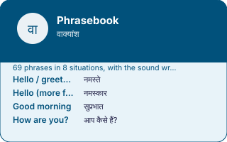

EkGuru › Learn Hindi › Tools › Phrasebook
Hindi phrasebook
🔊 Tap any speaker button to hear Hindi spoken. Too fast or slow? Use the speed button at the bottom-right of the page.
69 phrases that people actually say, grouped by situation, with the register warnings that most phrasebooks leave out — because saying the wrong level of politeness is a bigger mistake than saying the wrong word.
69 phrases
| English | Hindi | Sounds like | Note |
|---|---|---|---|
| Hello / greetings | नमस्ते | namaste | Neutral and safe with anyone. Not used between close friends, who mostly just say hi or the person's name. |
| Hello (more formal) | नमस्कार | namaskaar | A shade more formal than namaste. Common on television and in speeches. |
| Good morning | सुप्रभात | suprabhaat | Written and formal. In actual speech most people say namaste, or Good morning in English. |
| How are you? | आप कैसे हैं? | aap kaise hain | To a woman: आप कैसी हैं? (aap kaisi hain). The adjective agrees with the person you are addressing. |
| How are you? (informal) | तुम कैसे हो? | tum kaise ho | For friends and people younger than you. Using it with a stranger sounds abrupt. |
| I am fine | मैं ठीक हूँ | main theek hoon | |
| And you? | और आप? | aur aap | |
| Goodbye | अलविदा | alvida | Heavier than English goodbye — it carries a sense of parting for a long time. Day to day, people say namaste again, or फिर मिलेंगे. |
| See you later | फिर मिलेंगे | phir milenge | we will meet again |
| Good night | शुभ रात्रि | shubh raatri | Formal. Good night in English is extremely common in speech. |
| Thank you | धन्यवाद | dhanyavaad | Formal and sincere. Between friends and family Hindi often uses no thank-you at all; that is not rudeness, it is a different norm. |
| Thanks (Urdu-origin, very common) | शुक्रिया | shukriya | Lighter and warmer than dhanyavaad, and heard far more often in everyday speech. |
| Please | कृपया | kripaya | Formal and mostly written. In speech, politeness is carried by the verb ending — कीजिए rather than a separate word for please. |
| Sorry / excuse me | माफ़ कीजिए | maaf keejiye | forgive (me) |
| No problem | कोई बात नहीं | koi baat nahin | no matter at all |
| Yes | हाँ | haan | |
| Yes (polite) | जी हाँ | jee haan | जी is a respect particle. Adding it turns a blunt yes into a courteous one. |
| No | नहीं | nahin | |
| No (polite) | जी नहीं | jee nahin | |
| Okay / I see | अच्छा | achchha | Also means good. As a response its meaning shifts with tone: agreement, mild surprise, or is that so. |
| My name is … | मेरा नाम … है | mera naam … hai | |
| What is your name? | आपका नाम क्या है? | aapka naam kya hai | |
| I am from … | मैं … से हूँ | main … se hoon | |
| Where are you from? | आप कहाँ से हैं? | aap kahaan se hain | |
| Nice to meet you | आपसे मिलकर अच्छा लगा | aapse milkar achchha laga | |
| I am learning Hindi | मैं हिंदी सीख रहा हूँ | main hindi seekh raha hoon | A woman says सीख रही हूँ (seekh rahi hoon). Hindi verbs agree with the speaker's gender. |
| I speak a little Hindi | मैं थोड़ी हिंदी बोलता हूँ | main thodi hindi bolta hoon | A woman says बोलती हूँ (bolti hoon). |
| I don't understand | मुझे समझ नहीं आया | mujhe samajh nahin aaya | |
| Please speak slowly | ज़रा धीरे बोलिए | zara dheere boliye | |
| Say it again, please | फिर से कहिए | phir se kahiye | |
| Do you speak English? | क्या आप अंग्रेज़ी बोलते हैं? | kya aap angrezi bolte hain | |
| What does this mean? | इसका क्या मतलब है? | iska kya matlab hai | |
| How do you say this in Hindi? | इसे हिंदी में क्या कहते हैं? | ise hindi mein kya kehte hain | |
| Help! | मदद कीजिए! | madad keejiye | |
| I need a doctor | मुझे डॉक्टर चाहिए | mujhe doctor chahiye | |
| Where is the toilet? | बाथरूम कहाँ है? | bathroom kahaan hai | बाथरूम is the word people actually use, borrowed from English. शौचालय exists but is signage Hindi. |
| How much is this? | यह कितने का है? | yeh kitne ka hai | |
| That's too expensive | यह बहुत महँगा है | yeh bahut mehanga hai | |
| Please reduce the price a little | थोड़ा कम कीजिए | thoda kam keejiye | |
| Where is …? | … कहाँ है? | … kahaan hai | |
| Go straight | सीधे जाइए | seedhe jaaiye | |
| Turn left | बाएँ मुड़िए | baayen mudiye | |
| Turn right | दाएँ मुड़िए | daayen mudiye | |
| Stop here | यहीं रोकिए | yaheen rokiye | |
| How far is it? | कितनी दूर है? | kitni door hai | |
| I want to go to … | मुझे … जाना है | mujhe … jaana hai | |
| Please use the meter | मीटर से चलिए | meter se chaliye | Standard and expected in an auto-rickshaw. Saying it first, calmly, changes the negotiation. |
| I am hungry | मुझे भूख लगी है | mujhe bhookh lagi hai | hunger has attached to me |
| I am thirsty | मुझे प्यास लगी है | mujhe pyaas lagi hai | |
| Water, please | पानी दीजिए | paani deejiye | |
| Not spicy, please | तीखा मत बनाइए | teekha mat banaaiye | तीखा is chilli-hot. मसालेदार means well-spiced, which is not the same thing and is usually what you do want. |
| I am vegetarian | मैं शाकाहारी हूँ | main shaakaahaari hoon | |
| It is delicious | बहुत स्वादिष्ट है | bahut svaadisht hai | |
| The bill, please | बिल दीजिए | bill deejiye | |
| I have eaten enough | बस, बहुत हो गया | bas, bahut ho gaya | Useful and often necessary. Refusing more food once is treated as politeness rather than a real answer. |
| Mother | माँ | maa | |
| Father | पिता | pita | पापा (papa) is what people actually call their father. |
| Elder brother | भाई | bhai | बड़ा भाई for elder specifically. Also used for any man of similar age, affectionately. |
| Elder sister | दीदी | didi | Widely used for any older woman you are friendly with, not only a sister. |
| Son | बेटा | beta | |
| Daughter | बेटी | beti | |
| Wife | पत्नी | patni | |
| Husband | पति | pati | |
| Friend | दोस्त | dost | |
| I like it | मुझे पसंद है | mujhe pasand hai | to me it is pleasing — the thing is the subject, not you |
| I love you | मैं तुमसे प्यार करता हूँ | main tumse pyaar karta hoon | A woman says करती हूँ (karti hoon). This is the film version; in real life people more often say it in English or not at all. |
| I am happy | मैं ख़ुश हूँ | main khush hoon | |
| I am tired | मैं थक गया हूँ | main thak gaya hoon | A woman: थक गई हूँ (thak gayi hoon). |
| Don't worry | चिंता मत कीजिए | chinta mat keejiye |
The thing phrasebooks get wrong
Most lists give you one translation and move on. Hindi does not work that way. धन्यवाद and शुक्रिया both mean thank you, but the first is formal and slightly stiff and the second is what people actually say. कृपया means please and is almost never spoken — politeness in Hindi lives in the verb ending, not in a separate word. Get this wrong and you are not incomprehensible, you are odd, which is harder to recover from.
Two words that do more work than any phrase
अच्छा (achchha) means good, okay, I see, really?, and — with the right tone — I do not believe you. जी (jee) is a respect particle: add it to हाँ or to someone's name and a blunt sentence becomes a courteous one. Between them they carry an enormous amount of everyday conversation.
Devanagari is easy to get slightly wrong when it is typed by hand — a missing matra, the wrong nukta. If something here looks off to you, trust a native speaker over this page and please tell us so it gets fixed — it takes a moment and a real person reads it. Romanised spellings are a guide to the sound, not a standard: there is no single official way to write Hindi in Latin letters.
Questions
Fewer than you think, but you need them fast rather than well. Greetings, thank you, how much is this, where is, I do not understand, and the numbers to about a hundred will get you through almost any transaction. Everything else can be pointed at.
Phrases, if you are travelling within a few months. Grammar, if you intend to actually speak the language. Phrases give you transactions; grammar gives you sentences you have never heard before, which is what a conversation consists of.
Because in Hindi the verb agrees with the speaker's gender. A man says मैं सीख रहा हूँ, a woman says मैं सीख रही हूँ. Learning only one form means being wrong half the time, so both are marked here.
It is always safe, which is not the same thing. Between friends nobody says it — they use a name, or hi. It is the respectful, neutral option with strangers and elders, and that is exactly when a learner needs it.
A phrasebook covers the transactions you can predict. The moment somebody answers with something you did not anticipate, you need the language rather than the list — and that is the point at which an hour a week with a person overtakes any amount of self-study.
Find a Hindi Guru Free Hindi guidesNext
Phrasebook, in one picture
Every number and every word on this plate is taken from the tool below it, not drawn by hand: what you see here is what the tool holds.
